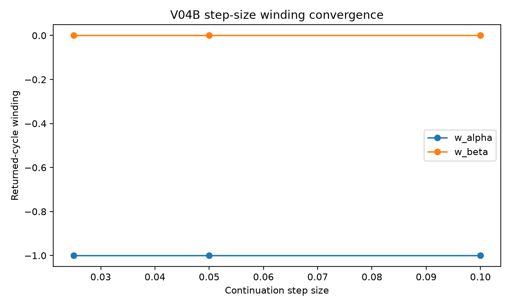
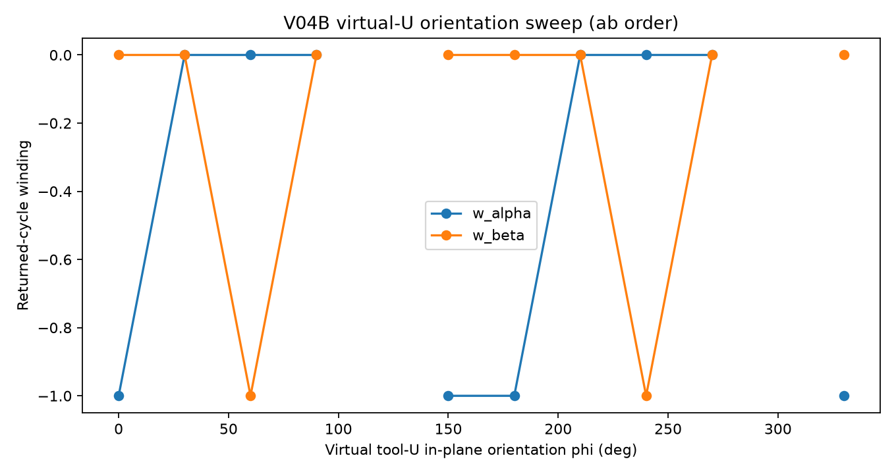
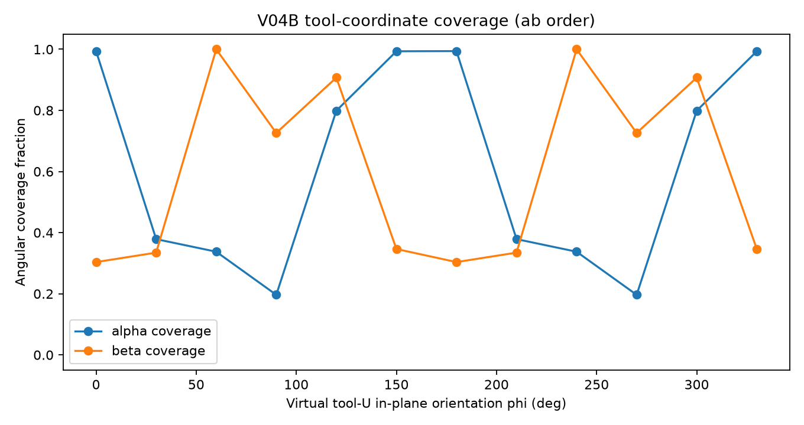
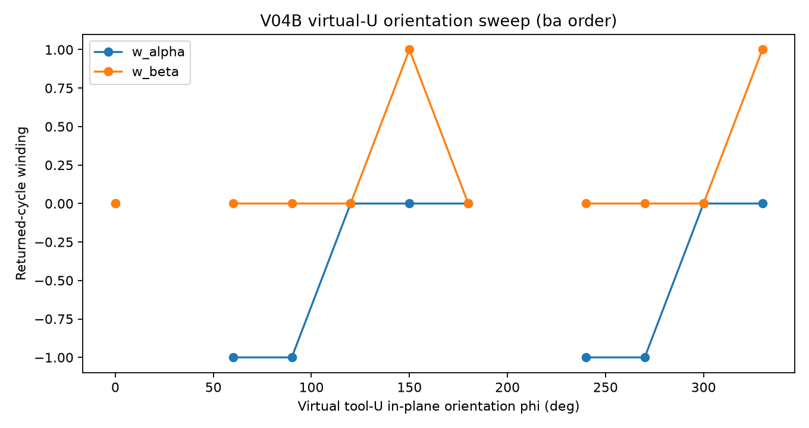
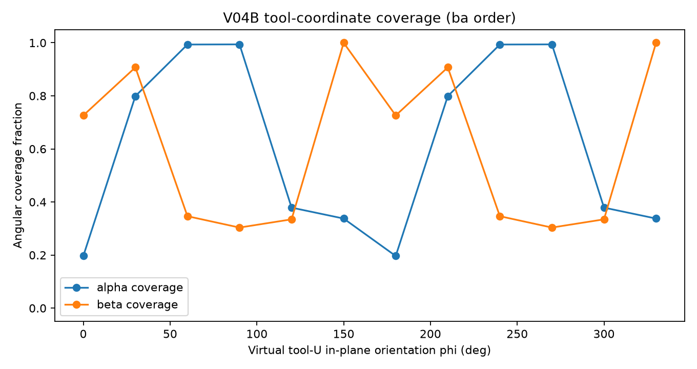

Purpose: validate V04 winding before V05 descriptor mining.
tool_a and tool_b are the two perpendicular revolute coordinates inside one virtual tool U. They are two classifications read from the same mechanism cycle, not two closure solves.

| Run | ds | dir | Status | Returned | w_alpha | w_beta | class alpha | class beta | coverage alpha | coverage beta | max raw dq | points |
|---|---|---|---|---|---|---|---|---|---|---|---|---|
| step_0.1 | 0.1 | 1 | returned | True | -1 | 0 | crank | rocker | 1 | 0.3036 | 0.08537 | 234 |
| step_0.05 | 0.05 | 1 | returned | True | -1 | 0 | crank | rocker | 0.994 | 0.3036 | 0.04241 | 466 |
| step_0.025 | 0.025 | 1 | returned | True | -1 | 0 | crank | rocker | 0.9907 | 0.3036 | 0.02116 | 930 |
Expected on the same returned branch: W_minus = -W_plus. Result: PASS.
| Run | ds | dir | Status | Returned | w_alpha | w_beta | class alpha | class beta | coverage alpha | coverage beta | max raw dq | points |
|---|---|---|---|---|---|---|---|---|---|---|---|---|
| direction_plus | 0.05 | 1 | returned | True | -1 | 0 | crank | rocker | 0.994 | 0.3036 | 0.04241 | 466 |
| direction_minus | 0.05 | -1 | returned | True | 1 | 0 | crank | rocker | 0.994 | 0.3036 | 0.04241 | 466 |


| phi | order | audit | rank | nullity | Status | w_alpha | w_beta | class alpha | class beta | coverage alpha | coverage beta | points |
|---|---|---|---|---|---|---|---|---|---|---|---|---|
| 0.0 | ab | PASS | 6 | 1 | returned | -1 | 0 | crank | rocker | 0.994 | 0.3036 | 466 |
| 30.0 | ab | PASS | 6 | 1 | returned | 0 | 0 | rocker | rocker | 0.3788 | 0.3346 | 276 |
| 60.0 | ab | PASS | 6 | 1 | returned | 0 | -1 | rocker | crank | 0.3376 | 1 | 732 |
| 90.0 | ab | PASS | 6 | 1 | returned | 0 | 0 | rocker | rocker | 0.1965 | 0.7262 | 460 |
| 120.0 | ab | PASS | 6 | 1 | open_branch | — | — | open_branch | open_branch | 0.7989 | 0.9073 | 1601 |
| 150.0 | ab | PASS | 6 | 1 | returned | -1 | 0 | crank | rocker | 0.9935 | 0.3464 | 544 |
| 180.0 | ab | PASS | 6 | 1 | returned | -1 | 0 | crank | rocker | 0.994 | 0.3036 | 466 |
| 210.0 | ab | PASS | 6 | 1 | returned | 0 | 0 | rocker | rocker | 0.3788 | 0.3346 | 276 |
| 240.0 | ab | PASS | 6 | 1 | returned | 0 | -1 | rocker | crank | 0.3376 | 1 | 732 |
| 270.0 | ab | PASS | 6 | 1 | returned | 0 | 0 | rocker | rocker | 0.1965 | 0.7262 | 460 |
| 300.0 | ab | PASS | 6 | 1 | open_branch | — | — | open_branch | open_branch | 0.799 | 0.9073 | 1601 |
| 330.0 | ab | PASS | 6 | 1 | returned | -1 | 0 | crank | rocker | 0.9935 | 0.3464 | 544 |


| phi | order | audit | rank | nullity | Status | w_alpha | w_beta | class alpha | class beta | coverage alpha | coverage beta | points |
|---|---|---|---|---|---|---|---|---|---|---|---|---|
| 0.0 | ba | PASS | 6 | 1 | returned | 0 | 0 | rocker | rocker | 0.1965 | 0.7262 | 460 |
| 30.0 | ba | PASS | 6 | 1 | open_branch | — | — | open_branch | open_branch | 0.7989 | 0.9073 | 1601 |
| 60.0 | ba | PASS | 6 | 1 | returned | -1 | 0 | crank | rocker | 0.9935 | 0.3464 | 544 |
| 90.0 | ba | PASS | 6 | 1 | returned | -1 | 0 | crank | rocker | 0.994 | 0.3036 | 466 |
| 120.0 | ba | PASS | 6 | 1 | returned | 0 | 0 | rocker | rocker | 0.3788 | 0.3346 | 276 |
| 150.0 | ba | PASS | 6 | 1 | returned | 0 | 1 | rocker | crank | 0.3376 | 1 | 732 |
| 180.0 | ba | PASS | 6 | 1 | returned | 0 | 0 | rocker | rocker | 0.1965 | 0.7262 | 460 |
| 210.0 | ba | PASS | 6 | 1 | open_branch | — | — | open_branch | open_branch | 0.799 | 0.9073 | 1601 |
| 240.0 | ba | PASS | 6 | 1 | returned | -1 | 0 | crank | rocker | 0.9935 | 0.3464 | 544 |
| 270.0 | ba | PASS | 6 | 1 | returned | -1 | 0 | crank | rocker | 0.994 | 0.3036 | 466 |
| 300.0 | ba | PASS | 6 | 1 | returned | 0 | 0 | rocker | rocker | 0.3788 | 0.3346 | 276 |
| 330.0 | ba | PASS | 6 | 1 | returned | 0 | 1 | rocker | crank | 0.3376 | 1 | 732 |
Do not remove tool-U orientation or axis order from the parameterization unless these sweeps show the crank/coverage result is invariant to them.